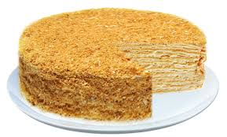

Торт «Наполеон»
Рецептов этого вкуснейшего торта существует великое множество.
Ингридиенты:

тесто:
300 г сливочного масла
2 яйца
150 мл воды
1 ст.л. уксуса 6% или 2 ст.л. лимонного сока
1/8 ч.л. соли
600–650 г муки
крем:
1 л молока
400 г сахара
2 ч.л. ванильного сахара
8 желтков
100 г муки
Приготовление
В холодную воду добавить уксус, перемешать.
Яйца взбить.
Добавить воду с уксусом, соль, перемешать.
Холодное масло натереть на крупной терке или нарезать кубиками.
Муку высыпать на разделочную поверхность.
Добавить масло.
Муку с маслом порубить ножом.
В полученной массе сделать углубление, вылить яйца с уксусом.
Замесить тесто.
Разделить тесто на 10–12 частей, сформировать шарики.
Накрыть их пищевой пленкой, убрать в холодильник на 1 час.
Затем каждый шарик тонко раскатать на бумаге для выпечки.
Вырезать круг, диаметром около 24–26 см.
Круг наколоть вилкой.
Перенести бумагу на противень (обрезки не убирать), поставить в разогретую до 180 градусов духовку.
Выпекать в течение 7–10 минут.
Готовим крем.
Молоко довести до кипения.
Желтки растереть с сахаром и ванильным сахаром.
Добавить муку, перемешать.
Добавить горячее молоко, перемешать.
Поставить массу на небольшой огонь, варить, при постоянном помешивании, до загустения.
Выпеченный охлажденный корж выложить в форму.
Смазать остывшим кремом.
Накрыть вторым коржом, смазать кремом.
Собрать, таким образом, весть торт, бока и верх обмазать кремом.
Обрезки измельчить в блендере.
Посыпать ими бока и верх торта.
Торт поставить в холодильник на 6–8 часов.